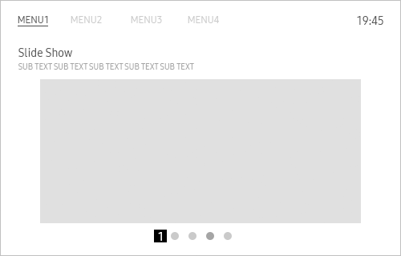
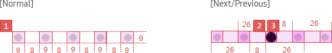
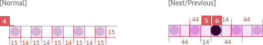
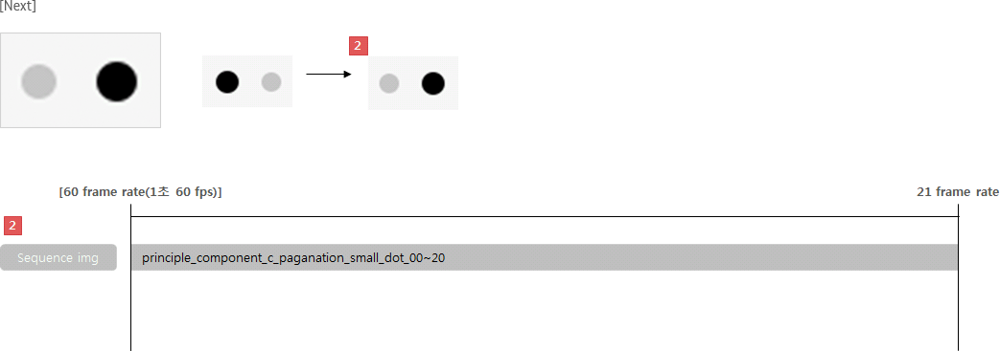
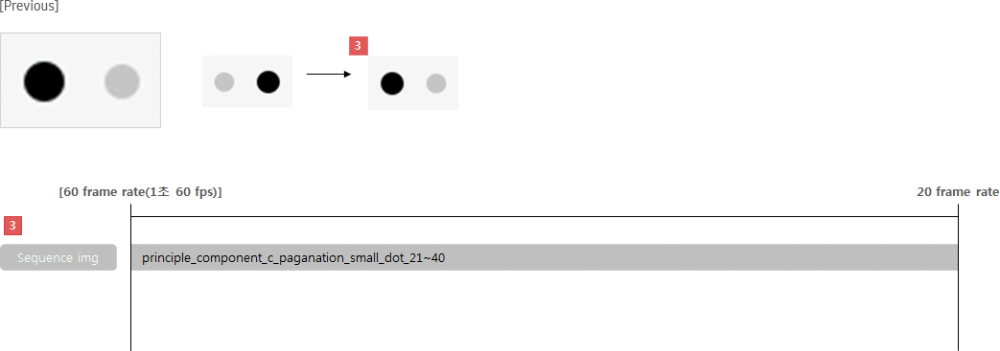
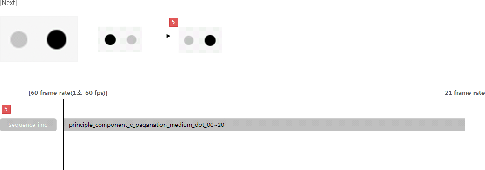
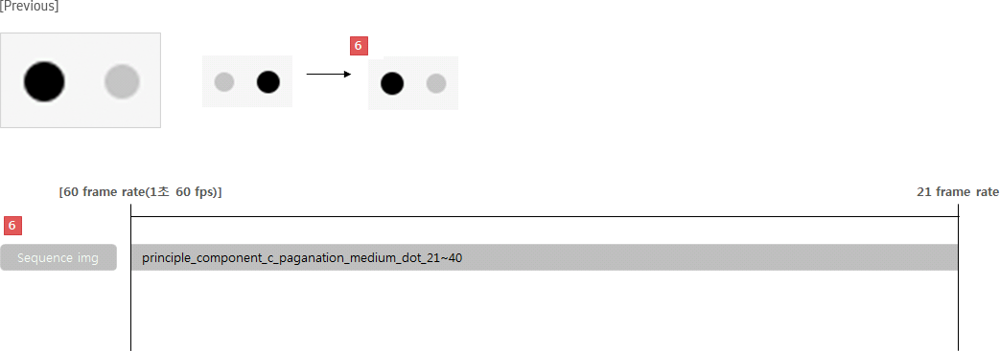
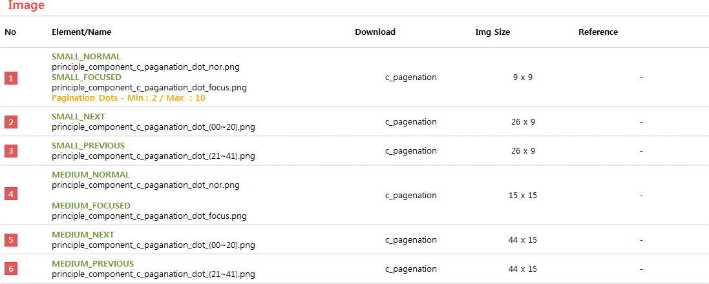

Pagination
Definition
Usage
Interaction
Specs
C_PAGINATION
Definition
Pagination shows the number of pages available and one is currently active. It appears as series of small dots.
Usage
- It is recommended to use when rich-content pages are placed with same level.
- If there are many pages to show, do not use pagination component.
. Dots over 10 are not effective navigation method and hard to recognize.
. Design under 10 pages. If it needs to more pages, display indicates as number.
- Looping is supported.
Interaction
Specs
Properties
Pagination consists of the following elements:
1. Page dots (
Mandatory
)
- display dots as the number of pages

Property Table
C_PAGINATION
PROPERTY
USE
VALUE
ADDITIONAL
Page dots
◎
-
Display dots as the number of pages
Visual
GUI
C_PAGENATION_WHITESMALL

C_PAGENATION_WHITEMEDIUM

Motion
C_PAGENATION_SMALL


C_PAGENATION_MEDIUM



Download PNG Resources
*Tags :
Step Indicator